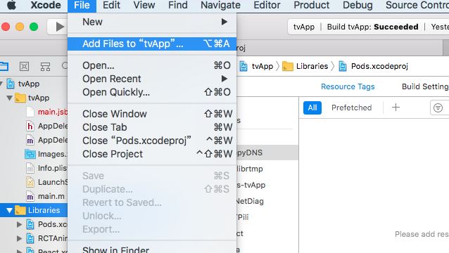

react-native-pili集成指南 为了今天的演习我们需要新建一个名为live的项目
1 js react-native init live
进入项目目录，调用下面的命令安装native-react-native插件
1 npm install native-react-native --save
进入项目目录下的ios目录，并且新建一个Podfile文件，并且写入下面的内容
1 2 3 4 5 6 platform :ios, '8.0' target 'tvApp' do pod 'yoga', path: '../node_modules/react-native/ReactCommon/yoga/' pod 'React', path: '../node_modules/react-native/' pod 'RCTPili', path: '../node_modules/react-native-pili/ios/RCTPili/' end
执行以下命令进行安装
安装完成之后，我们通过xcode打开tv.xcodeproj,然后把ios/Pods录下 Pods.xcodeproj添加到 Libraries下

执行上面的操作之后，我们还需要更改代码文件，替换如下
1 2 3 4 5 6 //将下面的内容进行替换 import React, { Component,PropTypes } from 'react'; 替换成 import {PropTypes} from 'prop-types'
我们利用香港卫视的源进行测试
1 2 3 4 5 6 7 8 9 10 11 12 13 14 const Player=require('./Player'); <Player source={{ uri: 'rtmp://live.hkstv.hk.lxdns.com/live/hks' }} muted={false} //iOS only started={this.state.plaing} //iOS only style={styles.videoStyle} onLoading={() => { }} //loading from remote or local onPaused={() => { }} //pause event onShutdown={() => { }} //stopped event onError={() => { }} //error event onPlaying={() => { }} //play event />